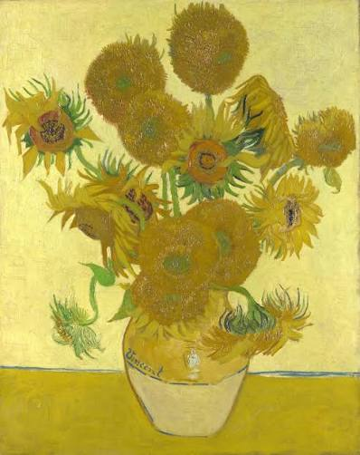

Starry Night
"The Starry Night" lah sebuah lukisan minyak di kanvas karya pelukis
pasca-Impresionis Belanda Vincent van Gogh. Dilukis pada Juni 1889,
lukisan tersebut menggambarkan pemandangan dari jendela yang menghadap
ke arah timur dari kamar rumah sakit jiwanya di Saint-Rémy-de-Provence,
tepat sebelum matahari terbit, dengan tambahan sebuah desa yang diidealkan.

Almond Blossom
"The Almond Blossom" h sejumlah lukisan yang dibuat pada tahun 1888 dan 1890 oleh
Vincent van Gogh di Arles dan Saint-Rémy, Prancis selatan, yang menggambarkan pohon-pohon
almond yang bermekaran. Pohon-pohon yang bermekaran dianggap istimewa oleh van Gogh.

Sunflowers
"The Sunflower" lah nama dari dua serial lukisan cuplikan kehidupan karya
pelukis Belanda Vincent van Gogh. Serial pertama, yang dieksekusi di Paris
pada 1887, menggambarkan bunga yang berada di tanah, sementara set kedua,
yang dieksekusi setahun kemudian di Arles, menampilkan seikat bunga matahari
di sebuah vas.
